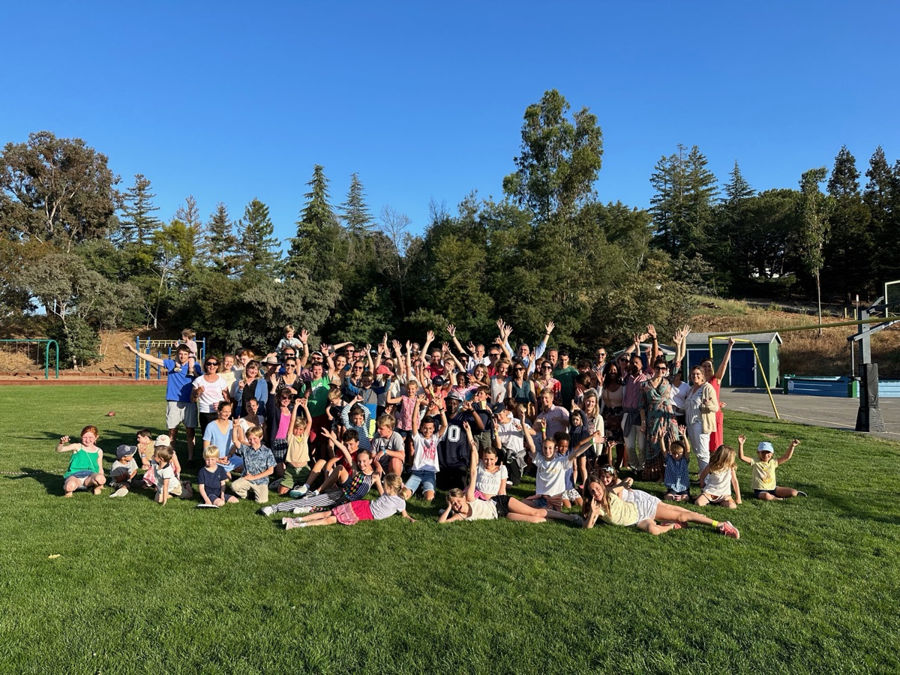

Los Altos
17 h
Chaque dimanche
St Nicholas Church
473 Lincoln Avenue
BIENVENUE CHEZ VOUS, DANS LA BAIE
Une communauté catholique francophone pour se retrouver, partager et cheminer dans la Silicon Valley.
La baie de San Francisco · Photo Antonio Gabola, site CathoSV
CÉLÉBRER ENSEMBLE
17 h
Chaque dimanche
St Nicholas Church
473 Lincoln Avenue
10 h 30
Chaque dimanche
Notre-Dame-des-Victoires
Au cœur de San Francisco
17 h
2e dimanche du mois
St Jarlath Church
Une rencontre mensuelle
Également à Pittsburg : messe mensuelle à Good Shepherd. Les horaires et les informations pratiques.
À VIVRE ET À PARTAGER
Quelques occasions de se rencontrer, de chanter et de se mettre au service des autres.
Une journée de partage autour de Mgr Cantú, avec les communautés du diocèse.
Petits et grands se retrouvent pour chanter avec la chorale CathoSV.
Une action à Milpitas avec Hope for the Unhoused, accessible dès 12 ans.
Aucun rendez-vous à venir dans cette catégorie. Consulter les nouvelles de CathoSV.
Sélection issue des annonces de CathoSV · Novembre 2026

Des visages, des liens, une communauté.NOUVEAU DANS LA BAIE ?
On arrive pour quelques mois ou pour des années. Et si l’on trouvait aussi une communauté où se sentir chez soi ?
CathoSV rassemble des francophones de tous horizons. En famille, en couple ou en solo, venez comme vous êtes : on sera heureux de vous rencontrer.
Rencontrer l’équipe d’accueilDécouvrir CathoSVÀ CHAQUE ÂGE, À CHAQUE ÉTAPE
Découvrir la foi, poser ses questions et grandir avec d’autres jeunes.
Prendre le temps d’échanger, de prier et de nourrir sa vie intérieure.
Un baptême, une communion, un mariage : être accompagné sur son chemin.
Pour vous ou pour votre enfant, échangez avec l’équipe pour préparer la prochaine étape.
Prendre contactGARDONS LE LIEN
Les nouvelles, les rencontres, les occasions de s’engager.
Retrouvez CathoSV tout au long de la semaine.